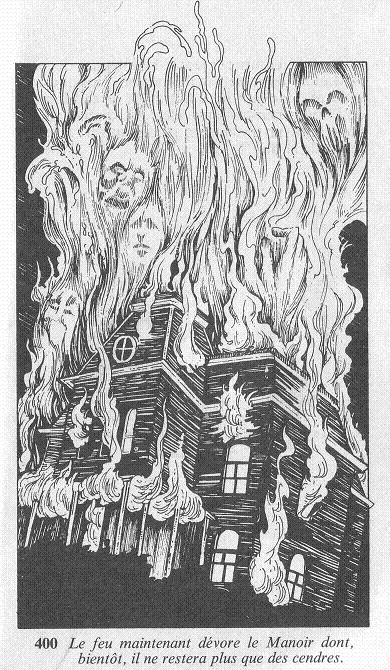

Lorsque vous lui donnez le coup de grâce, la créature pousse un cri effroyable en s'abattant sur la table. Dans un dernier sursaut, ses bras accrochent le candélabre dont les bougies s'éparpillent sur le sol. Un hurlement s'élève alors derrière vous, et en vous retournant dans l'instant, vous voyez votre deuxième adversaire, que vous aviez totalement oublié, sauter par-dessus la table et serrer le monstre contre sa poitrine en sanglotant. Malgré la pitié qu'il vous inspire, vous savez qu'il faut vous débarrasser du Comte également. Mais vous n'avez pas le temps de vous apitoyer sur son sort car quelque chose de beaucoup plus grave attire votre attention : une des bougies a roulé sur le sol jusqu'aux lourdes tentures qui, maintenant, commencent à prendre feu... vous devez sortir de ce Manoir, et vite ! La fumée a totalement envahi la salle à manger lorsque vous atteignez la porte du Manoir, et les flammes semblent vous poursuivre alors que vous dévalez les marches menant au porche. Arrivé dans l'allée, vous vous retournez : le feu, maintenant dévore le Manoir, dont bientôt il ne restera plus que des cendres.  Une fin tout à fait digne de ce Manoir de l'Enfer, pensez-vous. Mais où, diable, allez-vous pouvoir trouver un garage ouvert à cette heure de la nuit ?...